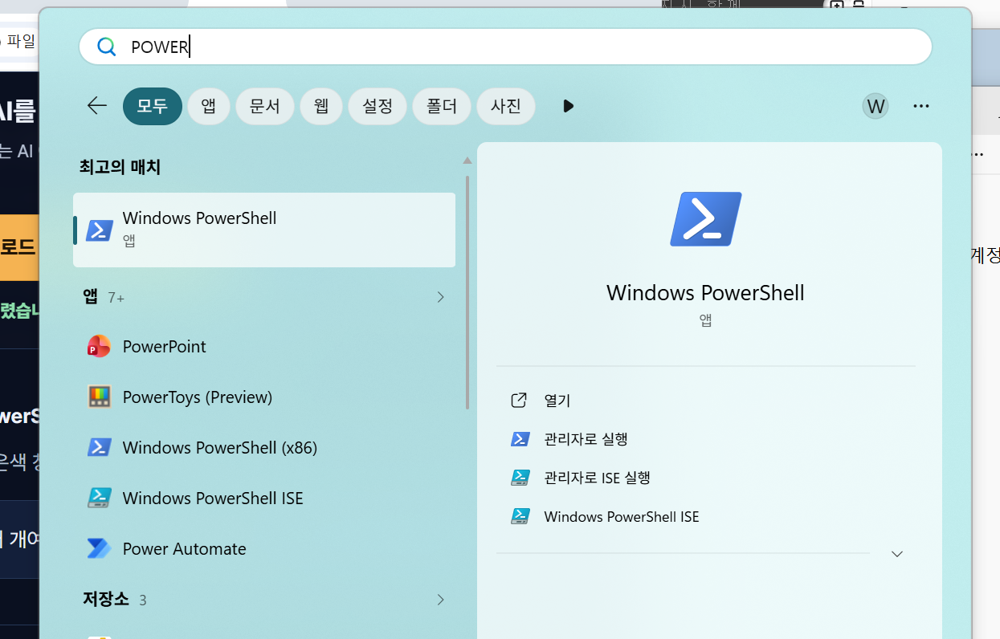
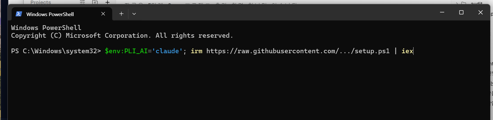
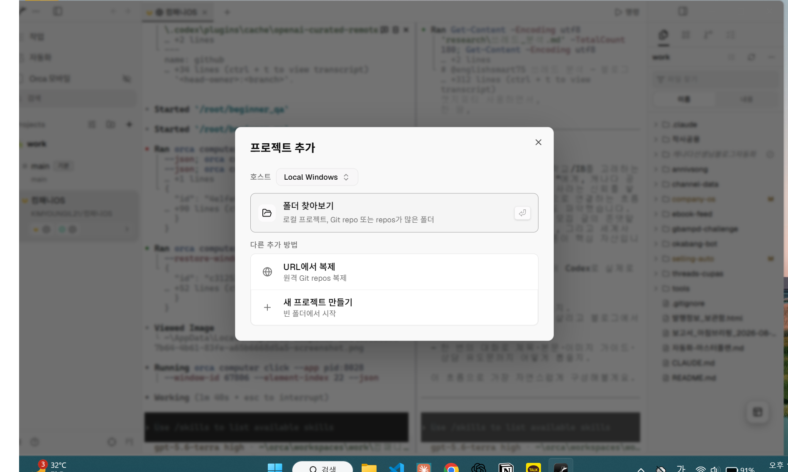
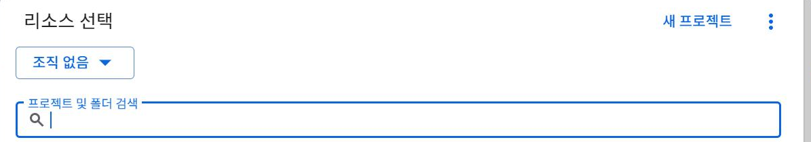
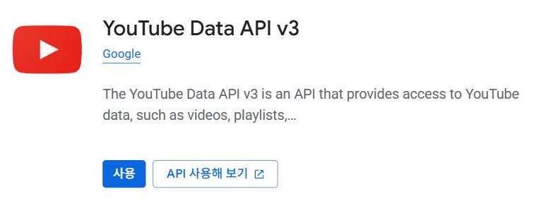
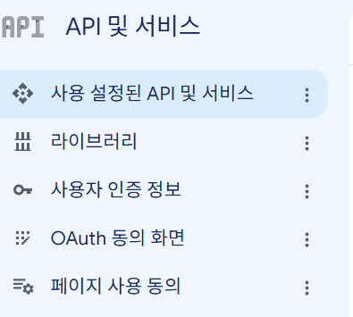
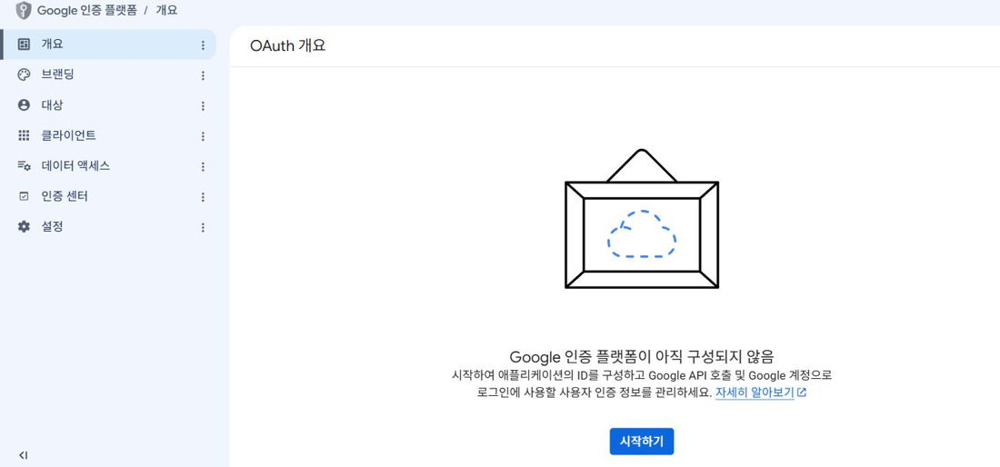
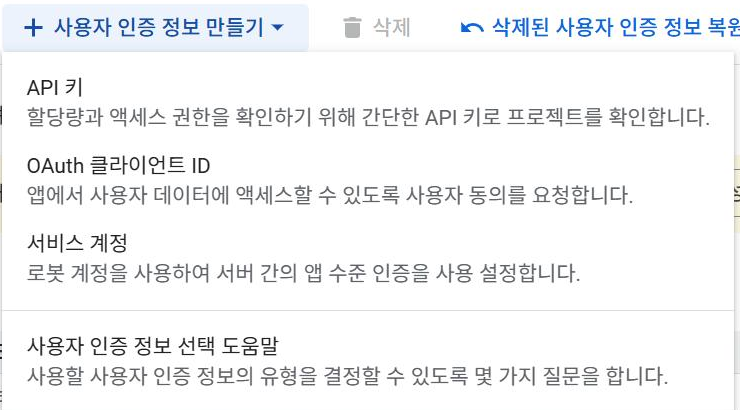

챌린지가 시작되기 전에 컴퓨터와 계정을 전부 준비합니다.
오늘 다 해두면 시작하는 날은 아주 가볍습니다. 약 1시간~1시간 30분, 중간에 쉬었다 이어서 해도 됩니다.
아래에서 평소 사용하는 AI 이름 하나만 눌러 주세요. 누른 뒤에는 그 AI에 필요한 안내만 보이니 편하게 따라오시면 됩니다.
위의 두 버튼 중 하나를 누르면 다음 안내가 열립니다.
크게 두 가지입니다 — ① 컴퓨터에 프로그램 깔기 ② 필요한 계정 만들어두기. 그게 전부입니다.
파워셸은 컴퓨터에게 설치를 부탁하는 창입니다. 파란색이나 검은색 화면이 열려도 놀라지 않으셔도 됩니다.

3단계는 클로드를 쓰는 분과 코덱스를 쓰는 분의 설치 방법이 다릅니다. 아래에서 하나를 고르시면 그 방법만 여기에 나타납니다. 나머지는 안 보이니 헷갈릴 일이 없습니다.
평소 쓰시는 것을 눌러 주세요
아래 버튼을 누른 뒤, 파워셸 창 안을 한 번 누르고 마우스 오른쪽 버튼을 눌러 주세요. 글이 붙으면 Enter를 한 번 누르면 됩니다.
$env:PLI_AI='claude'; irm https://raw.githubusercontent.com/KIMYOUNGIL21/r-64fe20c017/main/pli/setup.ps1 | iex

아래 버튼을 누른 뒤, 파워셸 창 안을 한 번 누르고 마우스 오른쪽 버튼을 눌러 주세요. 글이 붙으면 Enter를 한 번 누르면 됩니다.
$env:PLI_AI='codex'; irm https://raw.githubusercontent.com/KIMYOUNGIL21/r-64fe20c017/main/pli/setup.ps1 | iex
앞 단계 마지막에 검은 창이 새로 열렸을 겁니다. 그 창에서 로그인해 주세요. 안내에 따라 브라우저가 열리면 평소 쓰는 계정으로 로그인하면 됩니다.
검은 창이 열리지 않았을 때만 아래를 복사해 파워셸에 붙여넣고 Enter를 눌러 주세요.
claude
검은 창이 열리지 않았을 때만 아래를 복사해 파워셸에 붙여넣고 Enter를 눌러 주세요.
codex login
폴더는 이미 만들어져 있습니다. 앞 단계의 설치 한 줄이 C:\플리공장을 만들어 뒀습니다. 여기서는 그 폴더를 고르기만 하면 됩니다.
C:\플리공장

컴퓨터 준비는 여기까지입니다. 이제부터는 계정 준비입니다.
저는 전화번호 인증을 안 해두고 첫 영상을 올렸다가, 썸네일이 안 붙어서 왜 그런지 사흘을 몰랐습니다. 1분이면 끝나는 걸 사흘 미룬 셈입니다.
영상을 올릴 내 채널이 있어야 합니다. 할 일은 두 가지 — 채널 만들기와 전화번호 인증입니다.
youtube.com/verify
저도 이 화면을 처음 열었을 때 20분을 헤맸습니다. 어려워서가 아니었습니다. 구글이 메뉴 이름을 최근에 바꿔 놓아서, 안내서와 실제 화면이 안 맞았기 때문입니다. 그래서 이번엔 바뀐 이름과 옛 이름을 둘 다 적어 뒀습니다. 화면에 보이는 쪽을 누르시면 됩니다.
먼저 무엇을 하는 건지부터 말씀드릴게요.
내 컴퓨터의 공장이 내 유튜브에 영상을 대신 올리려면, 구글에게 "이 프로그램은 제가 쓰는 게 맞습니다"라고 알려줘야 합니다.
그 절차를 마치면 열쇠 파일이 하나 내려받아집니다. 그 파일을 공장에 넣어두면 끝입니다.
6단계에서 열어둔 Orca의 AI가 옆에 있습니다. 아래 글을 붙여넣으면 한 화면에 하나씩 알려주고, 내가 "됐어"라고 할 때까지 기다려 줍니다. 화면이 안내와 다르면 보이는 대로 말하면 거기에 맞춰 다시 알려줍니다.
유튜브 자동 업로드에 쓸 구글 열쇠를 만들려고 해. 나는 컴퓨터를 잘 몰라. 한 번에 화면 하나씩만 알려주고, 내가 "됐어"라고 하면 다음 화면을 알려줘. 버튼 이름은 화면에 보이는 글자 그대로 말해줘. 만들 것: console.cloud.google.com 에서 1) 새 프로젝트 (이름: 플리공장) 2) YouTube Data API v3 사용 설정 3) 메뉴 ≡ → API 및 서비스 → OAuth 동의 화면 → 외부 선택 → 앱 이름과 이메일 등록 4) 이어지는 테스트 사용자 화면에서 내 이메일 추가 5) API 및 서비스 → 사용자 인증 정보 → OAuth 클라이언트 ID → 데스크톱 앱 → JSON 다운로드 6) 같은 화면에서 API 키 하나 만들어서 복사 계정에 따라 메뉴 이름이 다를 수 있어. 브랜딩·대상·클라이언트로 나뉘어 보이면 브랜딩=앱 이름, 대상=외부와 테스트 사용자, 클라이언트=OAuth 클라이언트 만들기야. 내가 지금 보는 화면을 설명하면 거기에 맞춰서 알려줘. 중간에 내가 뭘 잘못 눌렀는지 물어보면 되돌리는 법도 알려줘.
먼저 브라우저에서 아래 주소를 열고, 유튜브 채널이 있는 구글 계정으로 로그인해 주세요.
console.cloud.google.com

YouTube Data API v3




C:\플리공장\API키.txt
저는 수노 가입을 곡 만드는 날 아침에 하려다 인증 메일이 스팸함에 들어가 있어서 20분을 날렸습니다. 오늘 해두시면 그날은 바로 시작합니다.
수노는 노래를 만들어 주는 사이트입니다. 며칠 뒤 내 곡을 만들 때 쓰는데, 가입만 오늘 해두면 그날 바로 시작할 수 있습니다.
아래가 비면 준비 완료입니다. 급하지 않으니 하루에 다 안 하셔도 됩니다.
컴퓨터 준비와 계정은 전부 끝내셨습니다.
남은 건 8번 구글 열쇠 하나뿐인데, 그건 시작하는 날 같이 해도 됩니다.
시작 전 준비 완료했습니다 ✅ (구글 열쇠는 첫날에 같이 하겠습니다) - 프로그램 설치 · AI 로그인 · Orca에서 AI 열림 - 유튜브 채널 + 전화번호 인증 - 수노 가입
시작하는 날 아침에 안내서를 하나 더 보내드립니다. 거기 “열쇠만 아직인 분” 안내가 따로 들어 있습니다. 그대로 오시면 됩니다.
컴퓨터도, 계정도 전부 준비됐습니다.
시작하는 날은 "만들어서 업로드해" 한 마디로 시작합니다.
시작 전 준비 전부 완료했습니다 ✅ - 프로그램 설치 · AI 로그인 · Orca에서 AI 열림 - 유튜브 채널 + 전화번호 인증 - 구글 열쇠 · API 키 - 수노 가입
시작하는 날까지 아무것도 안 하셔도 됩니다. 오늘 깔아둔 것들은 그대로 두시면 됩니다. 그날 공장 파일과 두 번째 안내서를 보내드립니다.